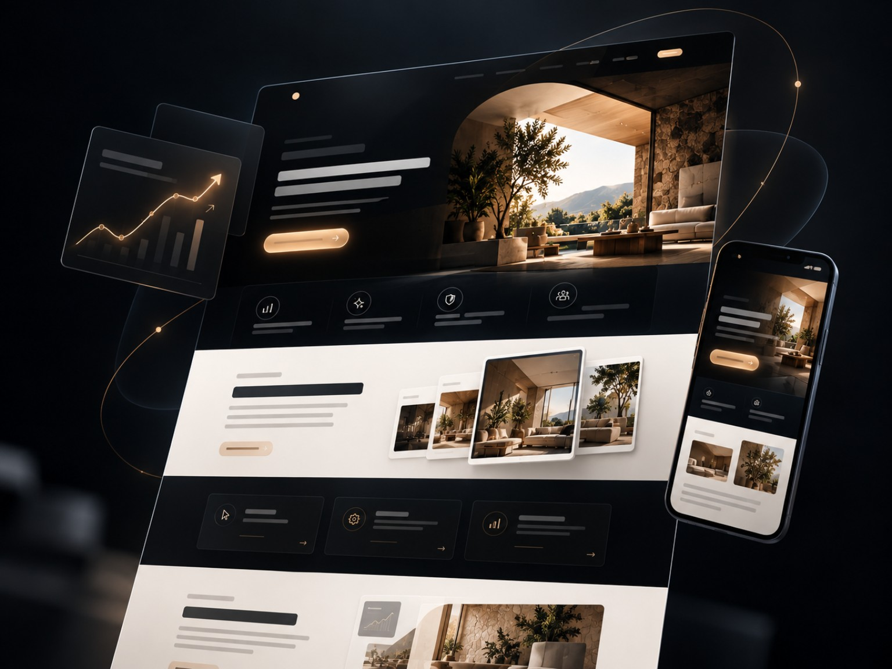
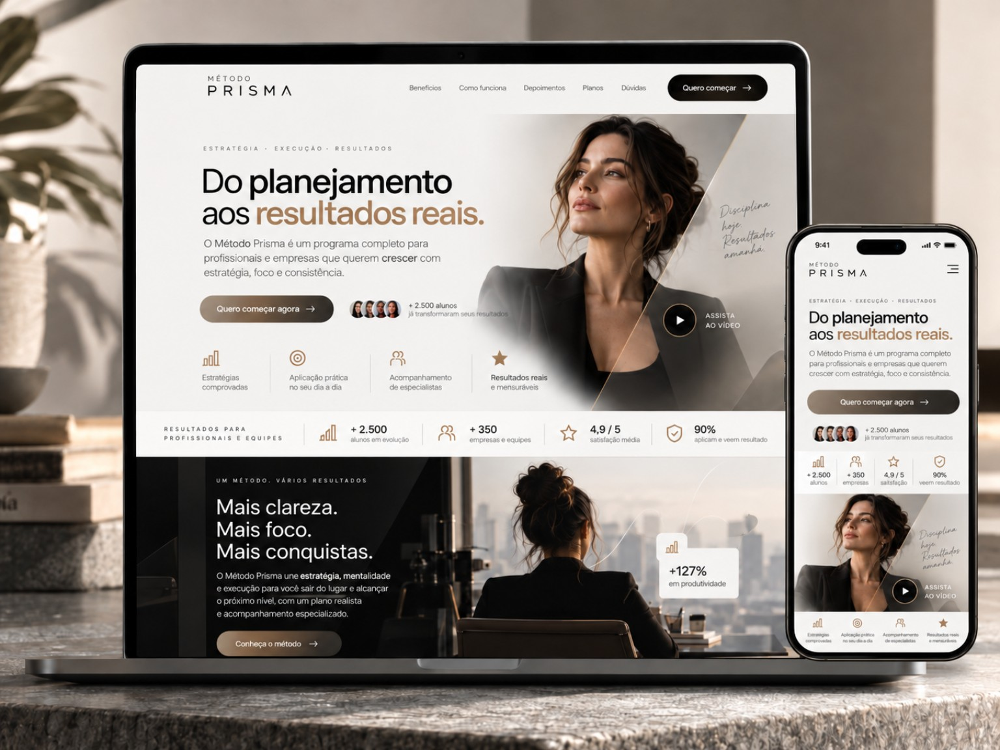
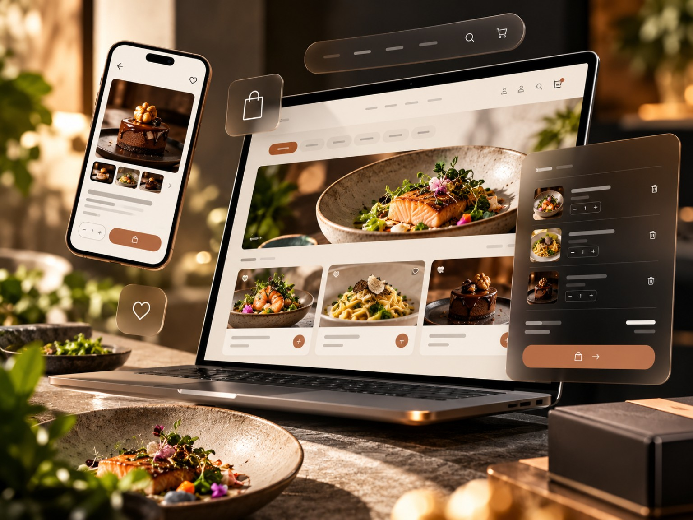
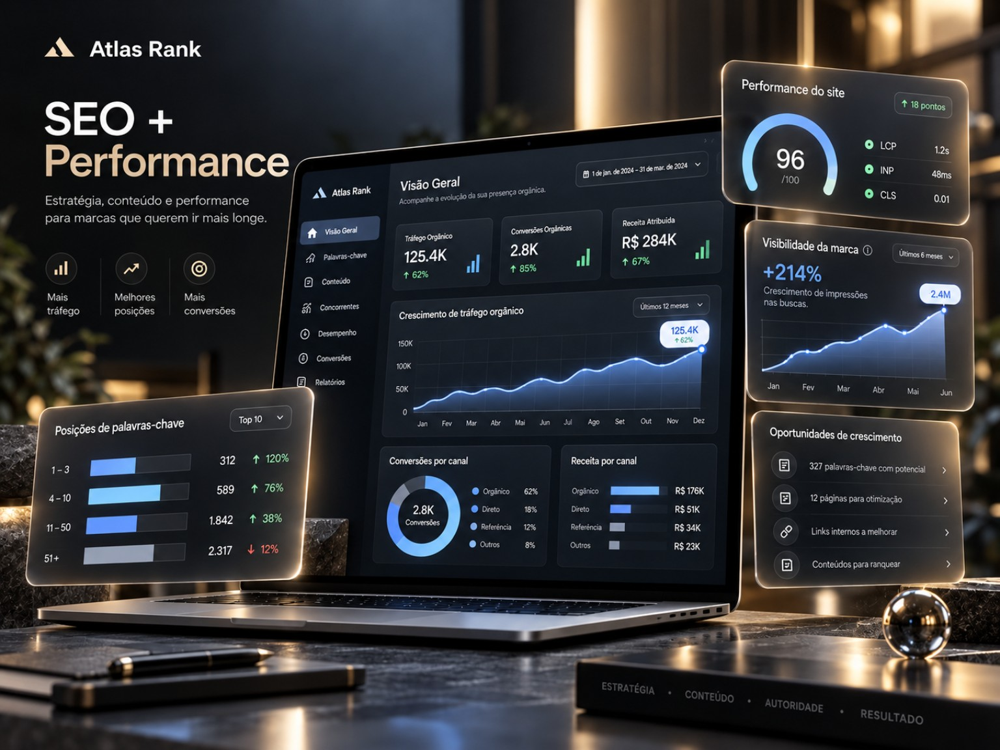
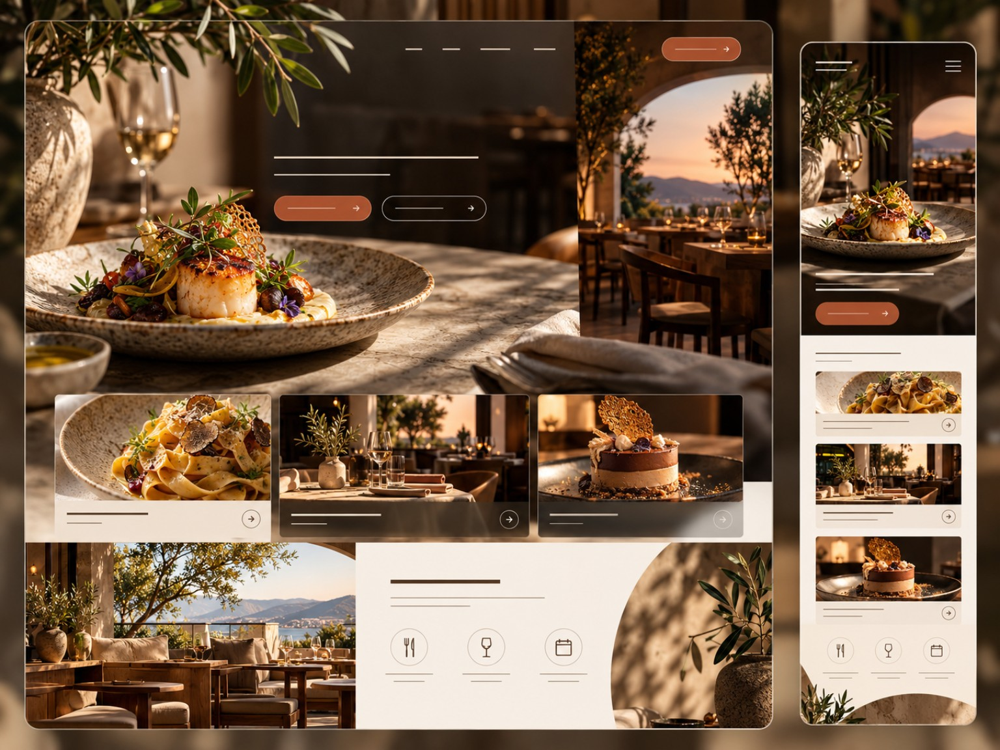
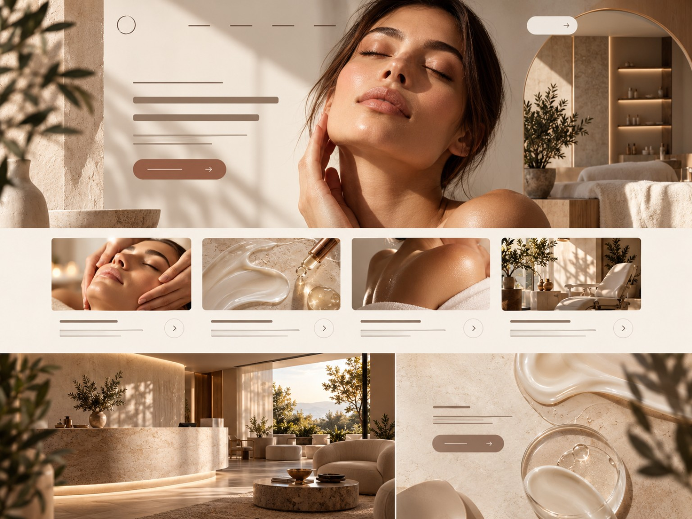
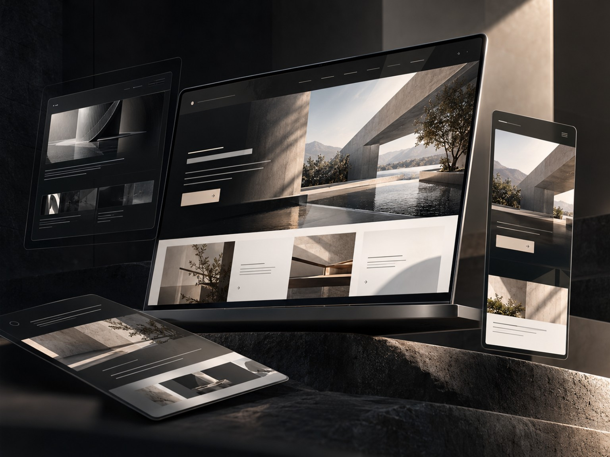

PRESENÇA QUE POSICIONA
ESTRATÉGIA · DESIGN · TECNOLOGIA
Estratégia, design e tecnologia para transformar sua presença digital em percepção, oportunidades e resultados.
VISÃO
MOVIMENTO
RESULTADOS
Um bom site não serve apenas para dizer que sua empresa existe. Ele deve transmitir valor, orientar o cliente e transformar atenção em oportunidade.
É por isso que estratégia, design e tecnologia entram antes da estética.
Enxergar antes de construir.
Transformar estratégia em experiência.
Presença que abre oportunidades.
Cada negócio tem um momento diferente. A Avero combina estratégia, design e tecnologia para construir a solução que faz sentido para o seu objetivo.
Não sabe exatamente o que precisa?



Explore algumas direções criadas pela Avero e encontre um ponto de partida para o seu projeto. Cada estrutura pode ser adaptada à identidade, ao conteúdo e aos objetivos do seu negócio.
Explorar toda a Coleção


Conceitos personalizáveis. Um ponto de partida para a sua marca.
Projetos construídos a partir do contexto, da identidade e dos objetivos de cada marca.
Cada projeto começa entendendo o negócio, o momento da marca e o que o digital precisa resolver. Depois, transformamos essa visão em direção, experiência e execução.
Entender antes de propor.
Definir antes de desenhar.
Transformar estratégia em experiência.
O lançamento não precisa ser o fim.
Clareza durante o processo.
Intenção em cada decisão.
Percepção gera confiança.
Confiança abre oportunidades.
Estratégia, design e tecnologia para transformar presença digital em resultados reais.
Se você quer transformar a presença digital
do seu negócio em algo mais claro, estratégico
e profissional, a Avero pode ajudar a construir
esse próximo passo.
Você não precisa chegar com tudo resolvido.
Às vezes, uma boa conversa já é o começo da direção certa.
Projetos personalizados para a realidade e o momento de cada negócio.